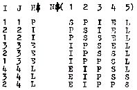
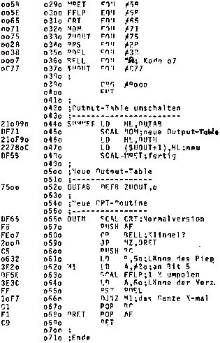

Nascom Journal |
August 1981 · Ausgabe 8 |
 und fertig.
Schon mehrfach habe ich es vermißt, daß das ASCII-Zeichen 07 (BEL) beim Nascom keinen Piepston auslöst. Das wäre praktisch für Terminal-Betrieb oder auch z.B. bei Basic Programmen, um den Benutzer zu einer Eingabe aufzufordern. Das vorgestellte Programm füllt diese Lücke. Einen Verstärker oder Lautsprecher an ein Bit in Port 0 anzuschließen, ist ja nichts Neues und in dieser Zeitschrift schon beschrieben worden. Das Interessante daran ist vielleicht die Methode, durch Umdefinieren der Output-Tabelle und Verwendung der „User“-Funktion diesen Piepser von allen Programmen durch einen Output auf den Bildschirm einschalten zu können; in Basic z.B. durch den Befehl „PRINT CHR (7)“. In der abgedruckten Version erscheint zusätzlich zum Piepston auch das BEL-Symbol auf dem Bildschirm . Das Programm ist relokatibel, kann also an beliebiger Stelle im Speicher stehen. Es muß einmal bei „SUMMER“ gestartet werden. Dann kehrt es zum Monitor zurück und kann sofort durch Drücken der Tasten Crtl-G getestet werden. Es bleibt aktiv, bis die Reset-Taste betätigt wird.
0080 ; **** KLINGEL **** 29.03.81 0090 ; 0000 ;M. Bach 0110 ;__ _________ __ 0120 ;____ Stegen 0130 ;_____/_____ 0140 ; 0150 ;Wenn der Kode 07H (ctrl-G) in der CRT- 0160 ;Routine kommt, wird ein Summer angestellt 0170 ;Der Summer hängt an Bit 5 von Port 0. 0180 ; Das Programm wird initialisiert durch 0190 ;Start bei SUMMER. Es kehrt zum Monitor 0100 ;zurück; und solange nicht RESET gedrückt 0210 ;wird, kann der Summer von allen Program- 0220 ;men benutzt werden (z.B. BASIC). 0230 ;Der User-Output wird verwendet und ist 0240 ;damit nicht anderweitig verfügbar. 0250 ; 0260 ;Betriebssystem NAS-SYS 0270 ; 0280 ;
Das Programm läuft auf Nascom 1 mit Nassys in Verbindung mit einem Ausgabeprogramm, das bei C80 beginnen muß. Das Ausgabeprogramm sollte statt einem Semikolon ein Komma setzen. Dies hat einen bestimmten Grund, denn das 8K-Basic läßt keine Kommata im String zu. Daher sind diese im Bildschirmtext durch Semikolons zu ersetzen. Mit 20 000 freien Speicherzellen lassen sich bis zu 250 Zeilen schreiben. Je nach Einstellung lassen sich Zeilen mit einer Länge von 66 bis 70 Buchstaben auf dem Fernschreiber abarbeiten. Das Unterprogramm zur Ausgabe sowie die Steuerung der Zeilenlänge werden vom Programm selbst übernommen. Mittels zweier Steuerbefehle kommt man sofort aus dem Eingabeprogramm: Pfeil nach oben (shift 0) bedeutet Sprung in die Subroutinen, „größer als“-Zeichen Sprung zur Ausgaberoutine. Alles
| Seite 15 von 24 |
|---|